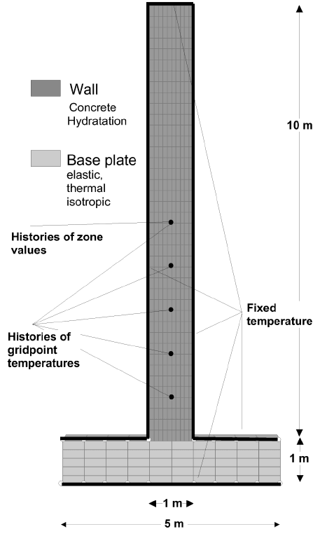
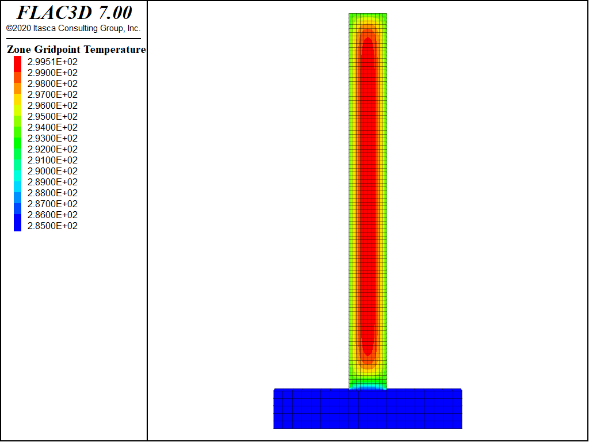
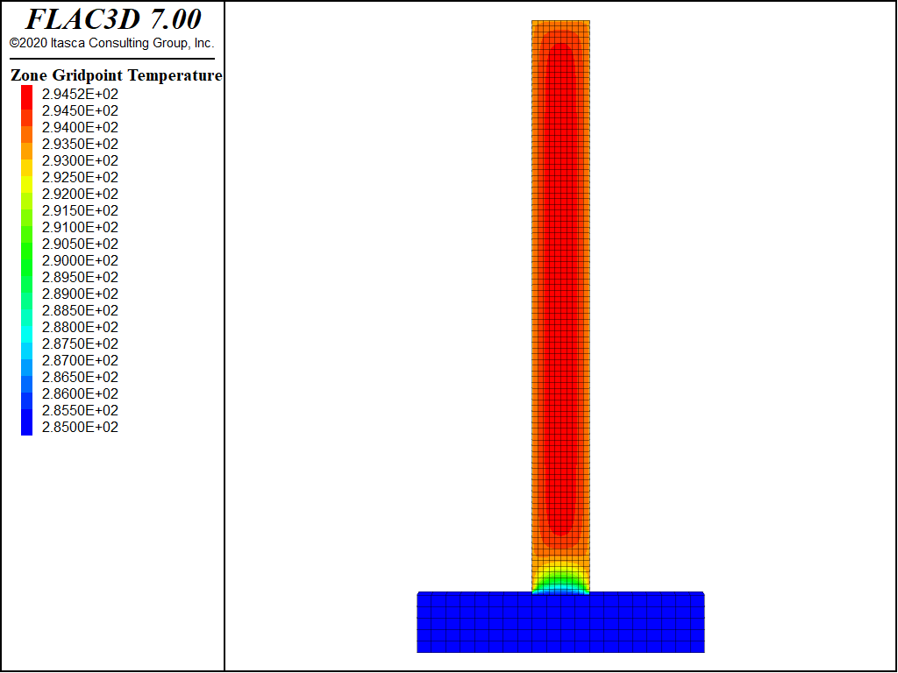
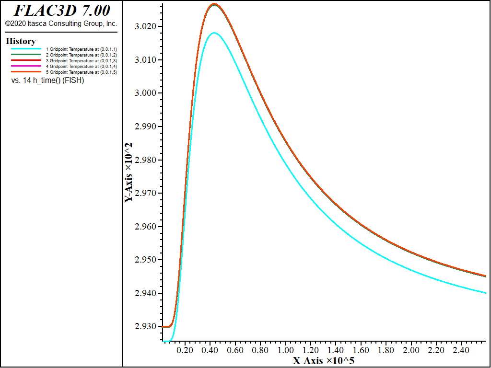
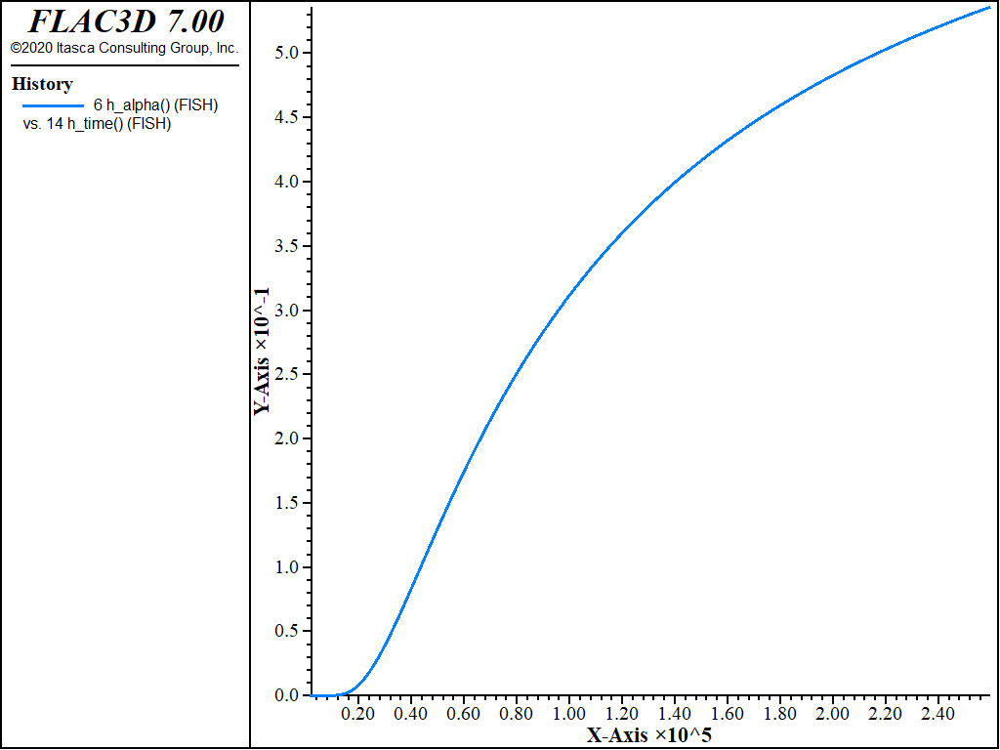
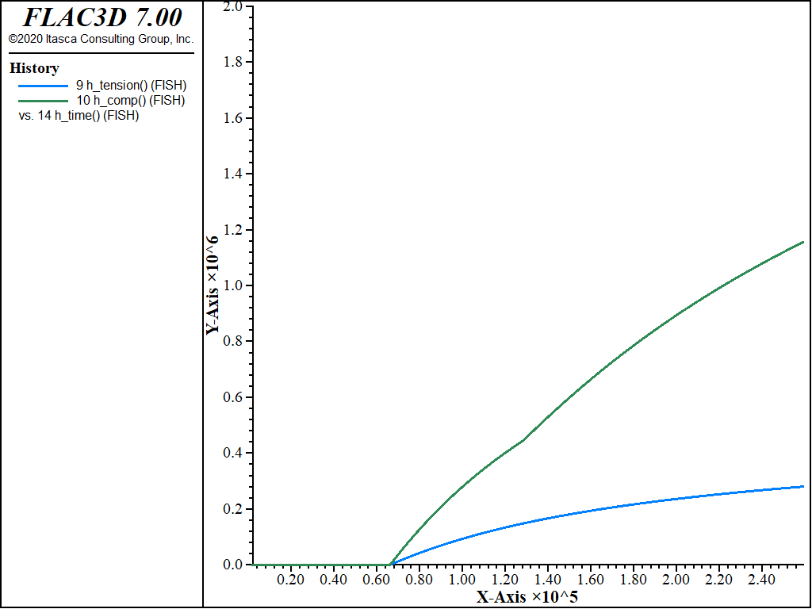
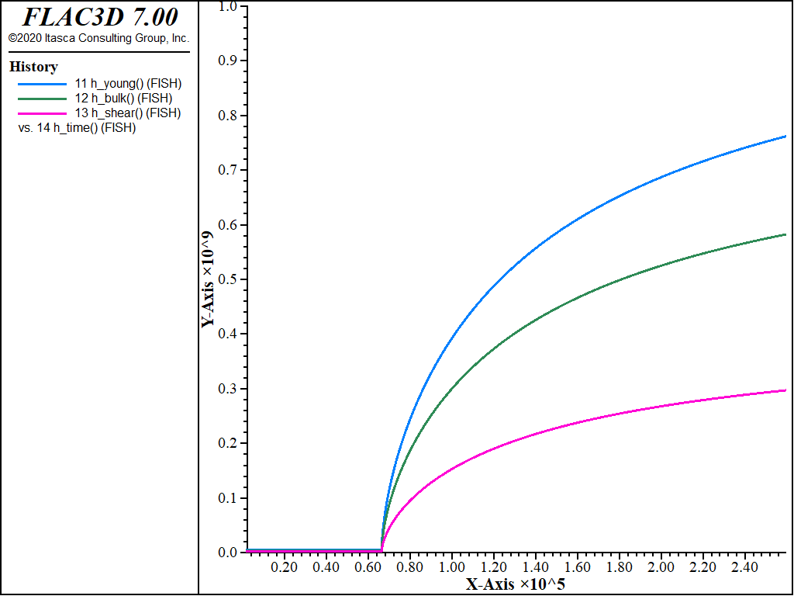
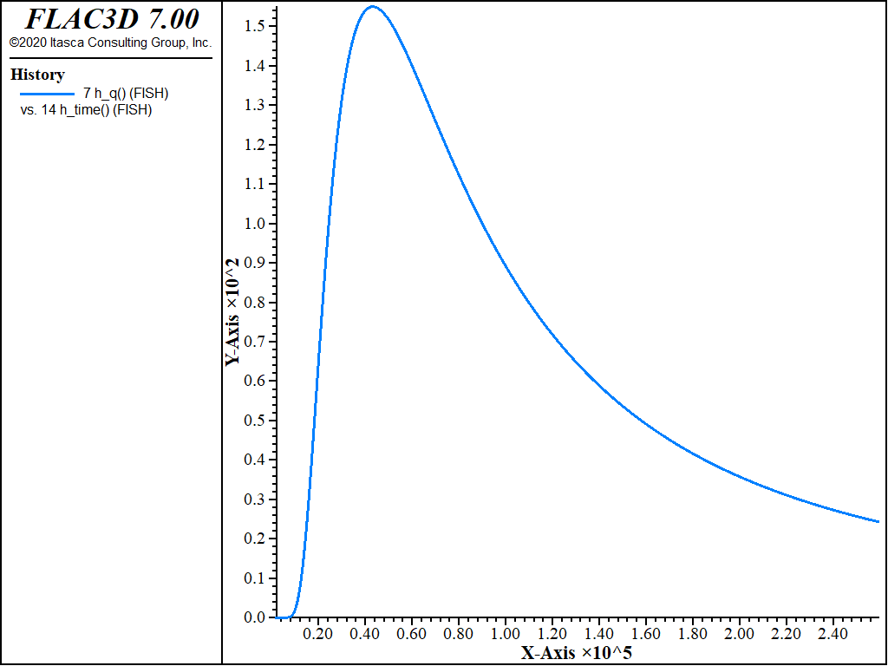

弹性底板上的混凝土墙
注意
要在 FLAC3D 中查看此工程，请使用菜单命令 。选择“Thermal/ConcreteWall”，再选择“ConcreteWall.f3dprj”即可加载。该工程的主数据文件（main data files）在本示例末尾给出。
本示例采用图 1（Figure 1） 所示的混凝土墙几何。该墙基于 Onken 和 Rostásy（1995）为将数值温度结果与温度实测值进行比较而建立的模型。模型由置于旧混凝土底板（10 × 1 × 5 个单元）之上的新混凝土墙（10 × 1 × 40 个单元）组成。Onken 和 Rostásy（1995）未给出材料参数和边界条件。因此，除采用典型温度边界条件外，材料参数取自混凝土夹杂体（concrete inclusion）示例。
对混凝土墙指定热学水化模型（hydration）和力学 水化 Drucker-Prager 模型（hydration Drucker-Prager model）（水化-德鲁克-普拉格（hydration-drucker-parger））。底板视为弹性且热各向同性。
模型视为处于夏季温度条件。墙边界的温度固定为气温；底板的温度固定为初始地温：
- 墙体初始温度 293 K
- 墙边界温度固定为 293 K
- 底板初始温度 285 K
- 底板边界温度固定为 285 K
数值结果示于图 2（Figure 2） 至图 8（Figure 8）：1 天和 3 天后模型内的温度分布（图 2（Figure 2） 和 图 3（Figure 3））；网格点温度的演化（图 4（Figure 4））；水化度的演化（图 5（Figure 5））；强度参数的演化（图 6（Figure 6））；弹性参数的演化（图 7（Figure 7））；以及水化热的演化（图 8（Figure 8））。结果在定性上与 Onken 和 Rostásy（1995）给出的结果吻合良好。（由于难以获取材料参数和边界条件，无法进行更详细的比较。）

图 1：弹性底板上的混凝土墙模型。


图 2：一天后（混凝土龄期）的温度分布。


图 3：三天后（混凝土龄期）的温度分布。


图 4：混凝土夹杂体试验中网格点温度随混凝土龄期的演化。


图 5：水化度随混凝土龄期的演化。


图 6：抗拉和抗压强度随混凝土龄期的演化。


图 7：弹性参数随混凝土龄期的演化。


图 8：生成的水化热随混凝土龄期的演化。
参考文献
Onken, P., and F. Rostásy. Wirksame Betonzugfestigkeit im Bauwerk bei früh einsetzendem Temperaturzwang, DAfStb Heft 449. Berlin: Beuth-Verlag (1995).
数据文件
;--------------------------------------
; 弹性底板上的混凝土墙
;--------------------------------------
model new
model large-strain off
model title ...
"Concrete wall on elastic base plate - summer temperature conditions"
model configure thermal
;
zone create brick point 0=(-0.5,0.0,0.0) point 1=(0.5,0.0,0.0) ...
point 2=(-0.5,0.2,0.0) point 3=(-0.5,0.0,10.0) ...
size = 10,1,100
zone create brick point 0=(-2.5,0.0,-1.0) point 1=(2.5,0.0,-1.0) ...
point 2=(-2.5,0.2,-1.0) point 3=(-2.5,0.0,0.0) ...
size = 20,1,5
zone attach by-face range position-z 0
;
zone group 'concrete' range position-z 0 100
zone group 'base_plate' range position-z -100 0
;
zone cmodel assign elastic range group 'base_plate'
zone thermal cmodel assign isotropic range group 'base_plate'
zone cmodel assign hydration-drucker-prager range group 'concrete'
zone thermal cmodel assign hydration range group 'concrete'
;
zone property density=2000 bulk=1e9 shear=0.7e9
zone thermal property conductivity=20. expansion=1e-4 specific-heat=0.2
zone thermal property conductivity= 2. expansion=1e-5 range group 'concrete'
; 修正 Drucker–Prager 模型
zone property bulk-reference=0.98e9 shear-reference=0.50e9 ...
range group 'concrete'
zone property constant-c=0.4 constant-a=0.6 ...
range group 'concrete'
zone property hydration-minimum=0.20 tension-reference=2.0e6 ...
range group 'concrete'
zone property hydration-difference-minimum=1e-4 ...
range group 'concrete'
; 水化的热学计算
zone thermal property conductivity=2.0 expansion=1e-5 specific-heat=0.2 ...
range group 'concrete'
zone thermal property density-cement=330 constant-jonasson-b=-1.114 ...
constant-jonasson-t1=7.2e4 ...
range group 'concrete'
zone thermal property constant-gas=8.314 temperature-reference=293 ...
hydration-grade-maximum=1.0 hydration-temperature-maximum=1e4 ...
range group 'concrete'
zone thermal property constant-energy-1=33.5 constant-energy-dt=1.47 ...
constant-energy-halftime=273 flag-law=0 constant-heat-1=0.2 ...
range group 'concrete'
zone thermal property hydration-binding-maximum=1e5 ...
constant-conductivity-1=2.0 ...
range group 'concrete'
;
zone gridpoint initialize temp 293 range group 'concrete'
zone gridpoint fix temp 293 range position-x -0.5
zone gridpoint fix temp 293 range position-x 0.5
zone gridpoint fix temp 293 range position-z 10.0
zone gridpoint fix temp 285 range group 'base_plate' ; <-- 覆盖原有值
zone gridpoint fix velocity range position-z -1.0
zone gridpoint fix velocity-x range union position-x -2.5 position-x 2.5
;
zone history temperature position (0,0.1,1)
zone history temperature position (0,0.1,2)
zone history temperature position (0,0.1,3)
zone history temperature position (0,0.1,4)
zone history temperature position (0,0.1,5)
[hzp = zone.near(0,0,5)]
fish define h_alpha
global h_alpha = zone.therm.prop(hzp,'hydration-grade')
global h_q = zone.therm.prop(hzp,'hydration-rate')
global h_te = zone.therm.prop(hzp,'age-concrete-effective')
global h_tension = zone.prop(hzp,'tension')
global h_comp = zone.prop(hzp,'compression')
global h_young = zone.prop(hzp,'young')
global h_bulk = zone.prop(hzp,'bulk')
global h_shear = zone.prop(hzp,'shear')
global h_time = thermal.time.total
end
fish history h_alpha
fish history h_q
fish history h_te
fish history h_tension
fish history h_comp
fish history h_young
fish history h_bulk
fish history h_shear
fish history h_time
zone geometry-update 10
model solve time-total [24*3600]
model save 'hyd_exp2_1d'
model solve time-total [3*24*3600]
model save 'hyd_exp2_3d'
| 这些内容对您有帮助吗？… 版权与免责声明 | FLAC3D © 2019, Itasca | 原文更新于 2020 年 10 月 8 日 |